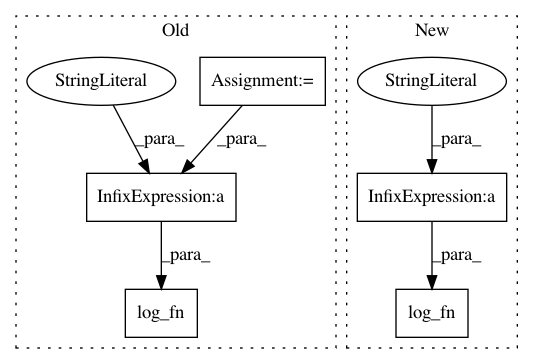

f68d785068c9b53a7de28aee32e64b113c3d3873,scripts/tf_cnn_benchmarks/benchmark_cnn.py,BenchmarkCNN,print_info,#BenchmarkCNN#,895
Before Change
device_list = self.raw_devices_across_tasks()
else:
device_list = self.raw_devices
batch_size = self.num_workers * self.batch_size
log_fn("Batch size: %s global" % batch_size)
log_fn(" %s per device" % (batch_size / len(device_list)))
if self.batch_group_size > 1:
log_fn(" %d batches per prepocessing group" %
self.batch_group_size)
After Change
device_list = self.raw_devices_across_tasks()
else:
device_list = self.raw_devices
log_fn("Batch size: %s global" % (self.batch_size * self.num_workers))
log_fn(" %s per device" % (self.batch_size /
len(self.raw_devices)))
if self.batch_group_size > 1:
log_fn(" %d batches per prepocessing group" %
In pattern: SUPERPATTERN
Frequency: 3
Non-data size: 5
Instances
Project Name: tensorflow/benchmarks
Commit Name: f68d785068c9b53a7de28aee32e64b113c3d3873
Time: 2017-12-18
Author: reedwm@google.com
File Name: scripts/tf_cnn_benchmarks/benchmark_cnn.py
Class Name: BenchmarkCNN
Method Name: print_info
Project Name: tensorflow/benchmarks
Commit Name: 21d5d9ff18e2ebb034e95871e311e5232bbf1826
Time: 2017-06-02
Author: annarev@google.com
File Name: scripts/tf_cnn_benchmarks/tf_cnn_benchmarks.py
Class Name: BenchmarkCNN
Method Name: _benchmark_cnn
Project Name: tensorflow/benchmarks
Commit Name: 9a20838a7af123340df65b2177b26eb7f8cab316
Time: 2017-06-02
Author: annarev@google.com
File Name: scripts/tf_cnn_benchmarks/tf_cnn_benchmarks.py
Class Name: BenchmarkCNN
Method Name: _benchmark_cnn